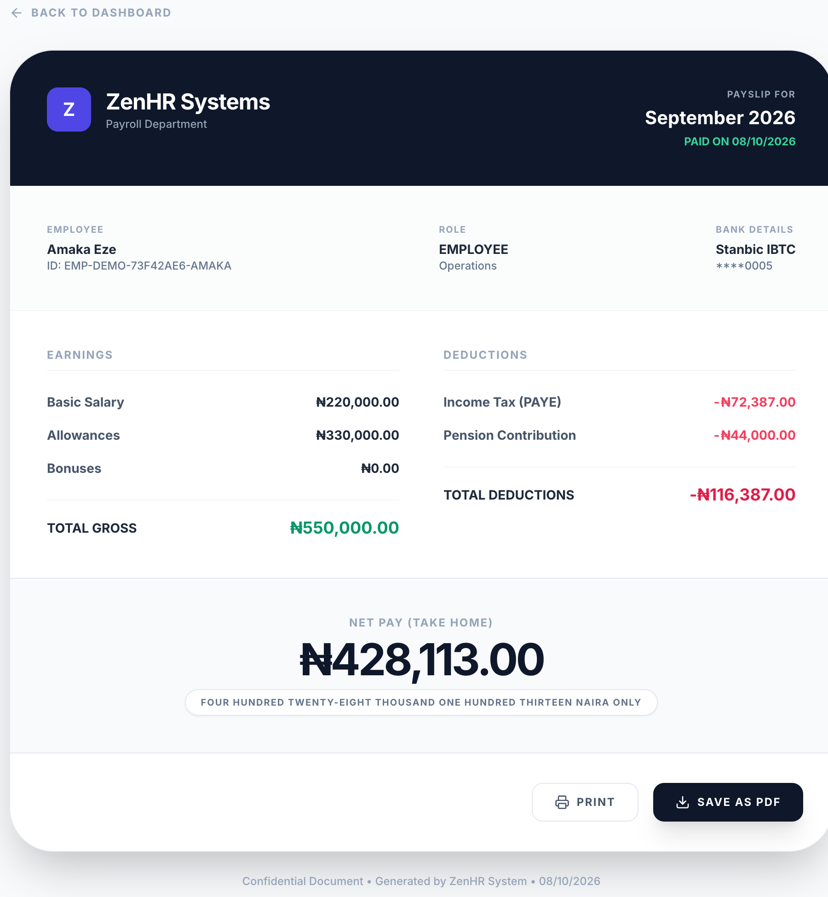
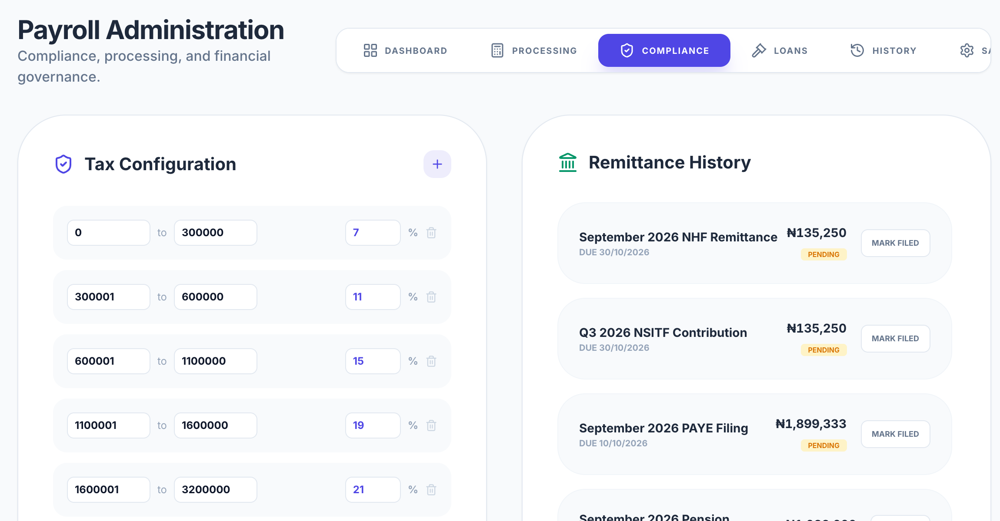

(a)
Itemised employee payslip with gross component breakdown, statutory deductions, and net pay in words

(b)
Statutory compliance calendar with automatically scheduled remittances, filing deadlines, and status tracking